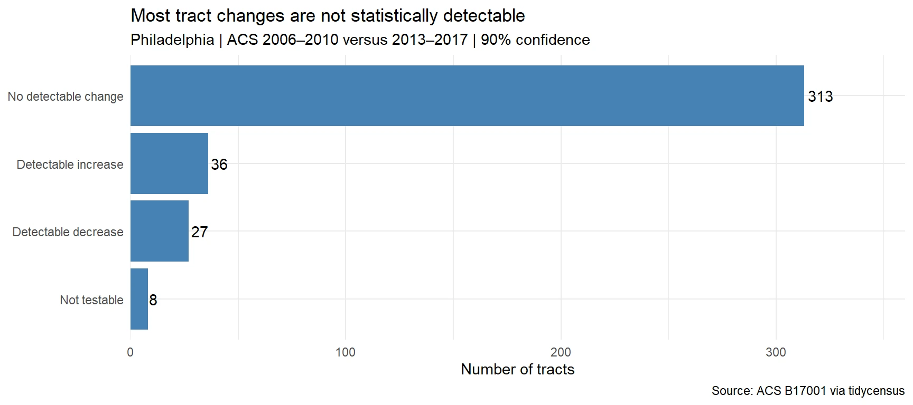

The question
A published article described Eastwick’s poverty rate rising from 12% to 26% between 2006–2010 and 2013–2017. I reconstructed tract-level poverty measures to ask which changes can be distinguished from sampling uncertainty. Because the article’s tract-to-neighborhood groupings were unavailable, this is a test of the broader tract pattern.
Reconstructing the measure
I used ACS table B17001, dividing the number of people below poverty by the population for whom poverty status was determined. Both periods use the same variables. Tracts were matched by GEOID, and undefined rates were retained in the audit rather than treated as zero.

Showing uncertainty
The error-bar diagram places each estimated change beside its 90% margin of error. An interval crossing zero means the change is not statistically detectable at that confidence level. The method combines standard errors for the two non-overlapping ACS periods under an independence assumption.
What the report found
Among 376 testable tracts, 36 showed detectable increases, 27 showed detectable decreases, and 313 had changes that could not be distinguished from zero. Eight additional tracts were not testable. Although 211 point estimates increased, only 36 passed the 90% test.
What the claim can support
The evidence supports increases in some parts of Philadelphia, alongside decreases elsewhere. It cannot verify Eastwick’s neighborhood rate or ranking without the relevant geographic groupings and aggregated counts. A non-detectable result also does not prove that no change occurred.
Adapted from the published Penn MUSA 5080 report and its rendered figures. The original course report remains available with its code and full results.
Discuss a similar project ↗